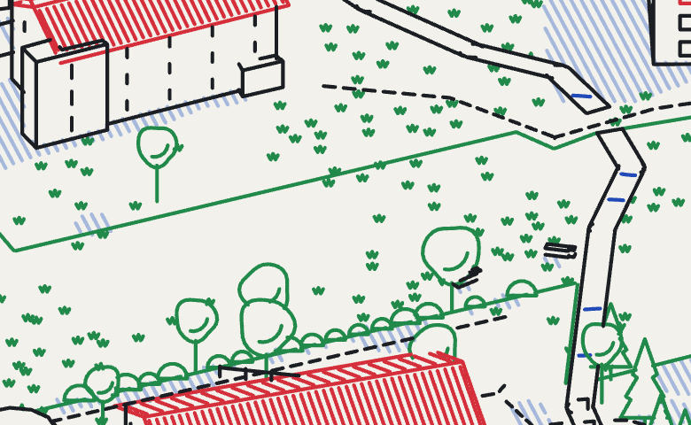
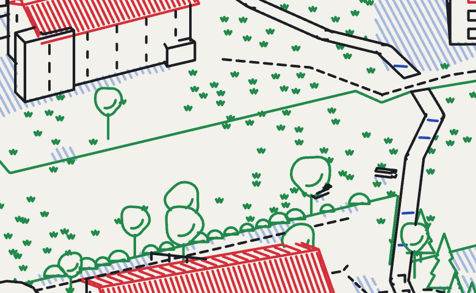
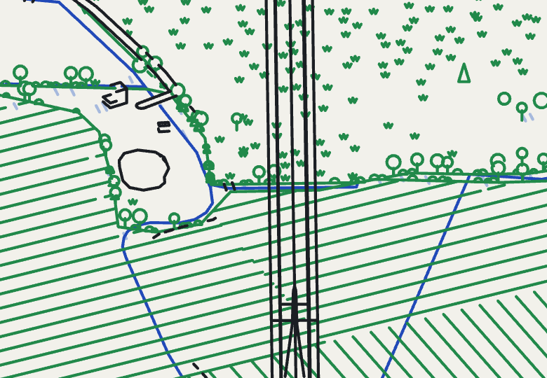
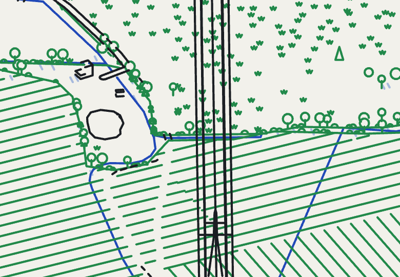

15 November 2026 · Original review · Round 9
The path corridor now clears ground textures as well as park hatching. Grass tufts and other small symbols are omitted whole if any of their strokes touches the corridor. Their surviving neighbours keep the same positions and shapes, avoiding clipped fragments or a reshuffled texture.
Flat field, allotment and vineyard rows break at the corridor. Farm outlines, standing objects, sports markings and shadows keep their existing treatment. Clearance works when park hatching is disabled, and follows the paths layer’s existing settings and detail rules.




Mollis, Rye and Trubschachen at 1:1000 and 1:4000, Detail 1, 0.35 mm pen, optional OSM tags off. Estimated plotting time drops modestly in all six cases.
| Sheet | Waste before → after | Estimated time change |
|---|---|---|
| Mollis 1:1000 | 6.8% → 6.8% | -0.42% |
| Mollis 1:4000 | 13.1% → 13.0% | -0.94% |
| Rye 1:1000 | 6.6% → 6.6% | -0.07% |
| Rye 1:4000 | 13.4% → 13.3% | -0.64% |
| Trubschachen 1:1000 | 5.8% → 5.7% | -0.29% |
| Trubschachen 1:4000 | 12.3% → 12.2% | -0.72% |
Before lab report · After lab report (local generated files)
Reviewed ten changed golden sheets, six LOD sheets and their centre close-ups, and enlarged grass and field comparisons. Only ground texture totals and resulting plot/SVG summaries changed; counts, census and other features remain unchanged. New tests check whole-symbol removal with regular and broad pens, clear field rows and preserved field boundaries. Build and all 570 tests pass.
No physical proofs were inspected, nor every seed, bearing, material or all 29 presets. The illustrated checks cover lawns and field rows; marsh, sand, rock and ice symbols use the same clearance helper but were not each reviewed in a dedicated close-up. Coarse, foreshortened path dashes can still fall below the existing short-stroke filter, leaving the corridor more legible than its centre marks; projected dash spacing remains a follow-up. Shadow and standing-object crossings also remain for later refinement.